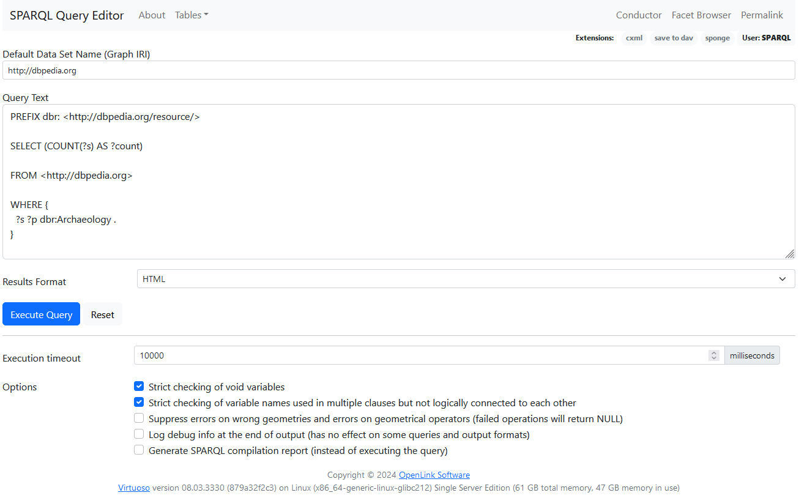
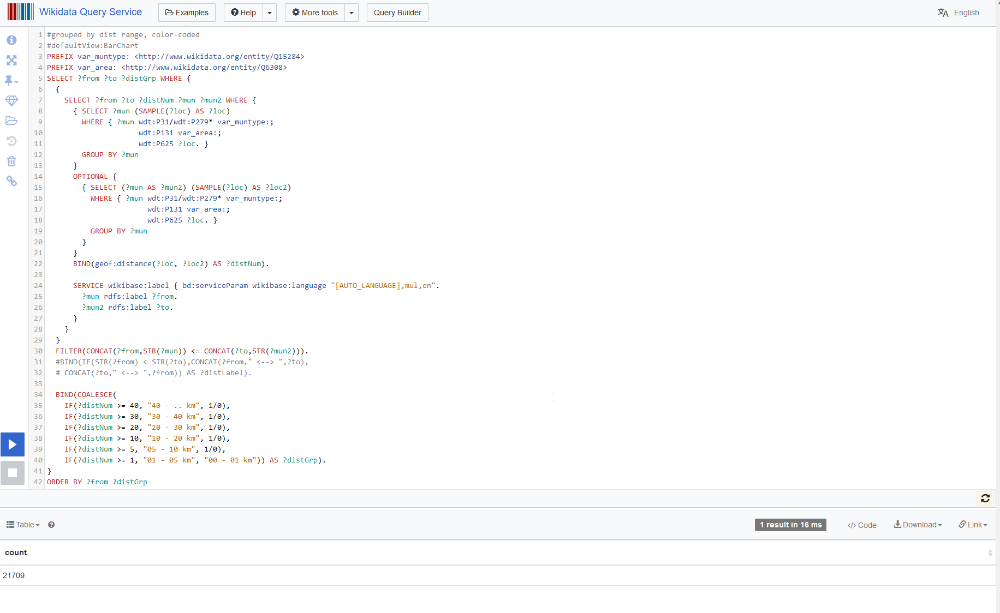
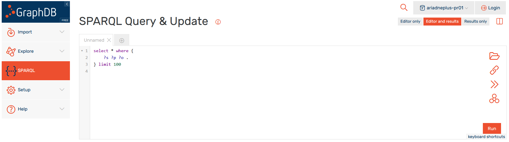
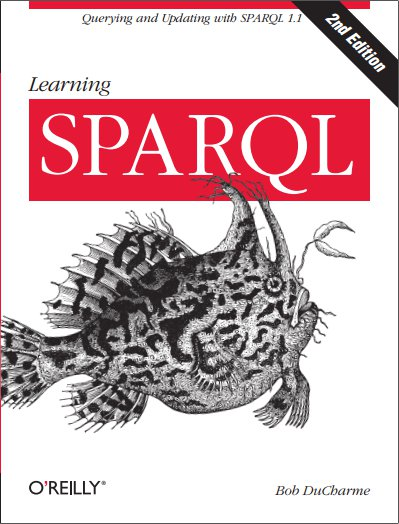
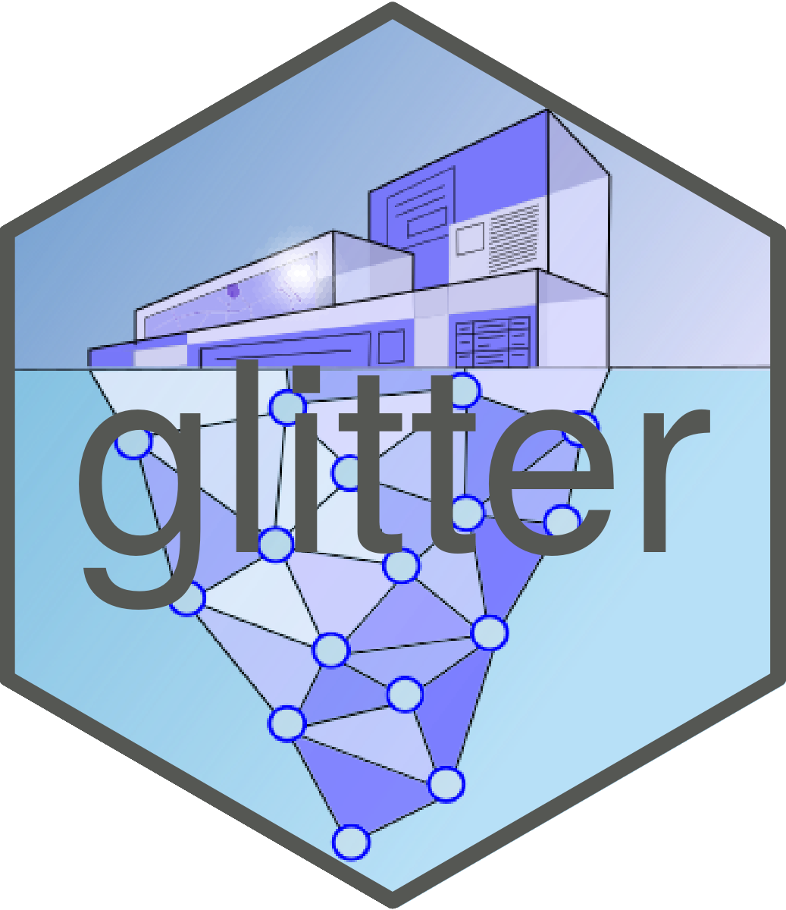
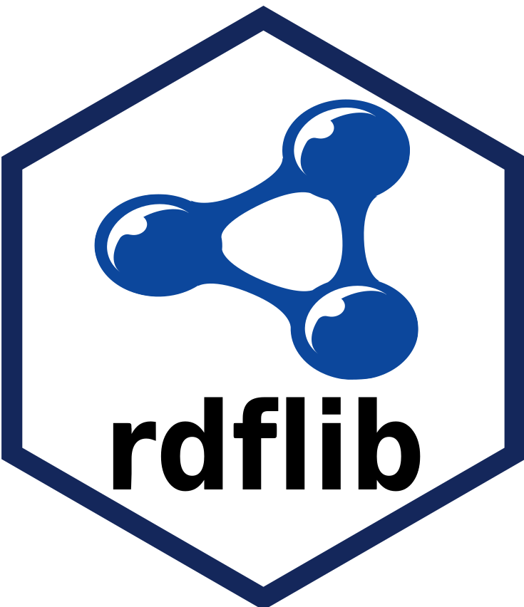

SPARQL
Outline
- Intro to SPARQL
- SPARQL queries from R
SPARQL query services and endpoints
- Wikidata
- DBpedia
- ARIADNE KB
Introduction to SPARQL
SPARQL Protocol and RDF Query Language
SPARQL
- SPARQL is a query language for RDF data.
- SPARQL is a recursive acronym for SPARQL Protocol and RDF Query Language.
- W3C standard.
Types of queries
ASKquery – returns true/false answer, checks whether there is at least one result.SELECTquery – returns list (table) of results.DESCRIBEquery – returns all possible data about an entity.CONSTRUCTquery – returns new set of triples based on a given template.
SELECT query
PREFIX rdf: <http://www.w3.org/1999/02/22-rdf-syntax-ns#>
PREFIX rdfs: <http://www.w3.org/2000/01/rdf-schema#>
SELECT ?label
FROM <SPARQL endpoint>
WHERE {
?subject ?predicate ?object .
?object rdfs:label ?label
}
LIMIT 100Parts of the query
PREFIX: Namespace definition – prefixes.SELECT: Selected variables – will be in the output as column names.FROM: Specification of the graph from which we are querying.WHERE: Where clause with triple patterns to be matched in the graph.LIMIT: Limits the number of returned results (so we do not overload the endpoint).
SPARQL query
- Consists of triple patterns with zero or more variables.
- Variables are prefixed with a question mark (
?variableName). - Triple patterns are matched against the triples in the graph.
- Each matching triple produces one result.
?subject ?predicate ?object .
Common abbreviations
- Subject as
?s - Predicate/property as
?p - Object as
?o
Examples
SPARQL queries on DBpedia, Wikidata and ARIADNE KB
Linked Open Data Cloud
LOD knowledge bases:
https://www.wikidata.org/
~12,5 billion triples

http://dbpedia.org/
~9,5 billion triples

The Linked Open Data Cloud from lod-cloud.net (2024-07-04)
DBpedia Virtuoso query service
Example query
DBpedia
- Find all other URIs/IRIs that Ariadne maps to in DBpedia.
PREFIX dbr: <http://dbpedia.org/resource/>
PREFIX owl: <http://www.w3.org/2002/07/owl#>
SELECT ?o
FROM <http://dbpedia.org>
WHERE {
dbr:Ariadne owl:sameAs ?o .
}
LIMIT 100Query in DBpedia Virtuoso.
Example query
DBpedia
- Find peole (and the dates they were born and died) who had to do anything with archaeology according to DBpedia.
PREFIX rdf: <http://www.w3.org/1999/02/22-rdf-syntax-ns#>
PREFIX dbr: <http://dbpedia.org/resource/>
PREFIX dbo: <http://dbpedia.org/ontology/>
SELECT ?s ?p ?born ?died
FROM <http://dbpedia.org>
WHERE {
?s rdf:type dbo:Person .
?s ?p dbr:Archaeology .
?s dbo:birthDate ?born .
?s dbo:deathDate ?died .
}
ORDER BY ASC (?born)
LIMIT 100Query in DBpedia Virtuoso.
ORDER BY ASCorders the results in an ascending order of the given variable.
Example query
DBpedia
- How many pages linking to archaeology are there?
PREFIX dbr: <http://dbpedia.org/resource/>
SELECT (COUNT(?s) AS ?count)
FROM <http://dbpedia.org>
WHERE {
?s ?p dbr:Archaeology .
}Query in DBpedia Virtuoso.
COUNT(?variable) AS ?resultcounts the number of returned matches.
Wikidata Query Service
Query service: https://query.wikidata.org/
SPARQL endpoint: https://query.wikidata.org/sparql
Example query
Wikidata
- How many archaeologists are there in Wikidata?
PREFIX wd: <http://www.wikidata.org/entity/>
PREFIX wdt: <http://www.wikidata.org/prop/direct/>
SELECT (COUNT(?ae) AS ?count)
WHERE {
?ae wdt:P31 wd:Q5 .
?ae wdt:P106 wd:Q3621491 .
}Query in Wikidata Query Service.
Example query
Wikidata
- Return a list of archaeologists, their sex/gender, and the dates they were born and died.
PREFIX wd: <http://www.wikidata.org/entity/>
PREFIX wdt: <http://www.wikidata.org/prop/direct/>
PREFIX rdfs: <http://www.w3.org/2000/01/rdf-schema#>
SELECT ?ae ?label ?sex ?born ?died
WHERE {
?ae wdt:P31 wd:Q5 ;
wdt:P106 wd:Q3621491 ;
rdfs:label ?label ;
wdt:P21 ?o ;
wdt:P569 ?born ;
wdt:P570 ?died ;
?o rdfs:label ?sex .
FILTER (lang(?label) = 'en')
FILTER (lang(?sex) = 'en')
}
LIMIT 200Query in Wikidata Query Service.
FILTER (lang(?label) = 'en')returns only labels in English.
Example query
Wikidata
- Count all archaeological artefacts and archaeological finds in Wikidata.
- Archaeological artefacts (
Q220659)
- Together in one query using
UNION
PREFIX wd: <http://www.wikidata.org/entity/>
PREFIX wdt: <http://www.wikidata.org/prop/direct/>
SELECT (COUNT(?a) AS ?count)
WHERE {
{ ?a wdt:P31 wd:Q220659 } UNION { ?a wdt:P31 wd:Q10855061 } .
}Query in Wikidata Query Service.
ARIADNE Knowledge Base
GraphDB graph database, accessible through D4Science infrastructure
https://ariadne.d4science.org/
SPARQL endpoint
https://graphdb.ariadne.d4science.org/repositories/ariadneplus-pr01
Example query
ARIADNE KB
- Find a resource with original identifier https://doi.org/10.17026/dans-2b6-gyjh.
PREFIX aocat: <https://www.ariadne-infrastructure.eu/resource/ao/cat/1.1/>
PREFIX rdfs: <http://www.w3.org/2000/01/rdf-schema#>
SELECT *
WHERE {
?record aocat:has_original_id "https://doi.org/10.17026/dans-2b6-gyjh" .
?record rdfs:label ?lab .
}Query in ARIADNE GraphDB.
- What is it?
PREFIX aocat: <https://www.ariadne-infrastructure.eu/resource/ao/cat/1.1/>
PREFIX rdfs: <http://www.w3.org/2000/01/rdf-schema#>
SELECT *
WHERE {
?record aocat:has_original_id "https://doi.org/10.17026/dans-2b6-gyjh" ;
rdfs:label ?lab ;
aocat:has_ARIADNE_subject ?as .
?as rdfs:label ?aslab .
}Query in ARIADNE GraphDB.
Example query
ARIADNE KB
- What are the native subjects of resource (artefact)
10.17026/dans-2b6-gyjh?
PREFIX aocat: <https://www.ariadne-infrastructure.eu/resource/ao/cat/1.1/>
PREFIX rdfs: <http://www.w3.org/2000/01/rdf-schema#>
SELECT *
WHERE {
?record aocat:has_original_id "https://doi.org/10.17026/dans-2b6-gyjh" ;
rdfs:label ?lab ;
aocat:has_native_subject ?ns .
}Query in ARIADNE GraphDB.
- Let GraphDB
DESCRIBEthe resource for us.
Query in ARIADNE GraphDB.
Example query
ARIADNE KB
- Return all ARIADNE subjects.
PREFIX aocat: <https://www.ariadne-infrastructure.eu/resource/ao/cat/1.1/>
PREFIX rdfs: <http://www.w3.org/2000/01/rdf-schema#>
SELECT DISTINCT ?as ?label
WHERE {
?s aocat:has_ARIADNE_subject ?as .
?as rdfs:label ?label .
}Query in ARIADNE GraphDB.
Wrap up
SPARQLis a very complex and versatile query language for queries (not only) on graph data.- Most common queries are using
SELECTverb. - Triples in the
SELECTquery are matched against the triples in the graph. One matching triple in the graph returns one row in the results. - Variable names are prefixed with a question mark (
?).
Common variable names
?sfor subject.?pfor predicate.?ofor object.

Learning SPARQL book by Bob DuCharme
https://www.learningsparql.com/
SPARQL queries in R
How to query SPARQL endpoints from R
LOD packages in R

glitter
Allows writing and performing SPARQL queries without advanced knowledge of SPARQL.
https://lvaudor.github.io/glitter/index.html
remotes::install_github("lvaudor/glitter")

rdflib
Allows to perform common tasks on local RDF data, including converting between serializations and performing SPARQL queries.
https://docs.ropensci.org/rdflib/
remotes::install_github("ropensci/rdflib")

jsonld
Various functions for formatting of JSON-LD data and transformation to RDF (N-Quads).
https://docs.ropensci.org/jsonld/index.html
install.packages("jsonld")
glitter
- Functions are prefixed with
spq_.
Main functions
spq_init(endpoint = "wikidata")initiates a SPARQL query.spq_add("?s ?p ?o")adds a triple pattern to match.spq_perform(<query>)performs the query.
Additional functions
spq_prefix()add prefix to the query.spq_label(<var>)adds labels to given variables withrdfs:label.spq_head(n)limits number of returned results usingLIMIT n.spq_arrange(desc(<var>))arranges results in descending order of the variable.spq_filter(<var>)filter results.spq_group_by(<var>)group results by one or more variables.spq_count()andspq_summarise(<var>)count results or summarise chosen variables.spq_select(<var>)select variables.
Example query
Wikidata
See and follow R script with comments here.
- Find all archaeological artefacts made of bronze.
Load the glitter package:
Package WikidataR helps us to identify entities and properties we need:
Once we know the identifiers of properties and entities we can build a query:
q1 <- spq_init() %>%
spq_add("?a wdt:P31 wd:Q220659") %>%
spq_add("?a wdt:P186 wd:Q34095") %>%
spq_label(a, .languages = "en$")Explore the query:
Perform the query:
Explore the results:
Example query
Wikidata
- Count how many artefacts are made of each material.
Example query
Wikidata
- Add coordinates and images to artefacts made of bronze where possible.
WikidataR::find_property("coordinate")
# edit
q3 <- spq_init() %>%
spq_add("?a wdt:P31 wd:Q220659") %>%
spq_add("?a wdt:P186 wd:Q34095") %>%
spq_add("?a wdt:P625 ?coords", .required = FALSE) %>%
spq_add("?a wdt:P18 ?img", .required = FALSE) %>%
spq_label(a, .languages = "en$")
# perform
res3 <- q3 %>%
spq_perform()
# transform to simple features
res3sf <- res3 %>%
dplyr::filter(!is.na(coords)) %>%
sf::st_as_sf(wkt = "coords") %>%
dplyr::mutate(
popup = dplyr::if_else(
is.na(img),
paste0("<a href='", a,"'><h2>", a_label, "</h2></a>"),
paste0("<a href='", a,"'><h2>", a_label, "</h2></a><img src='", img, "' width='200' height='200'>")))
# plot using leaflet
res3sf %>%
leaflet::leaflet() %>%
leaflet::addTiles() %>%
leaflet::addMarkers(popup = res3sf$popup)